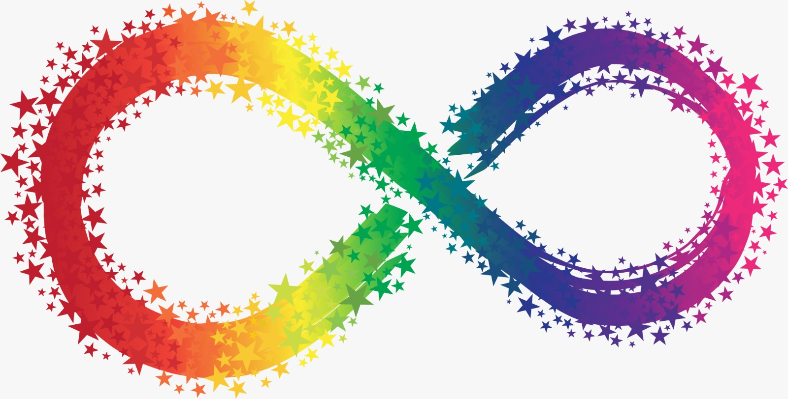
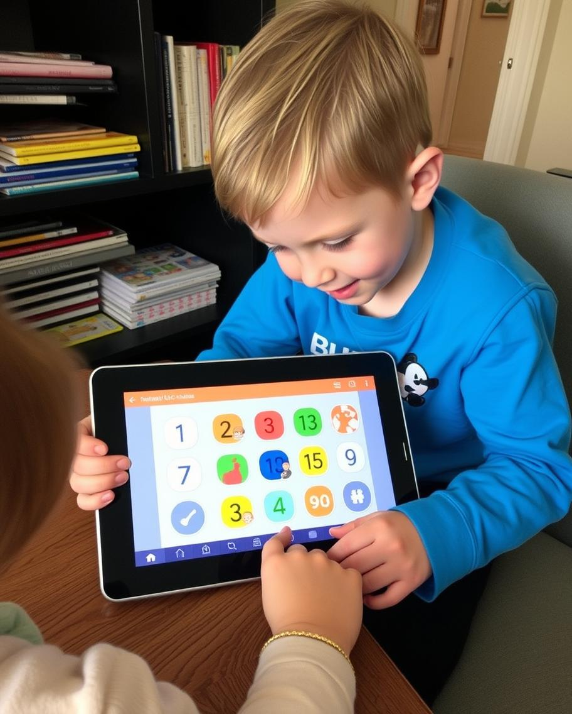
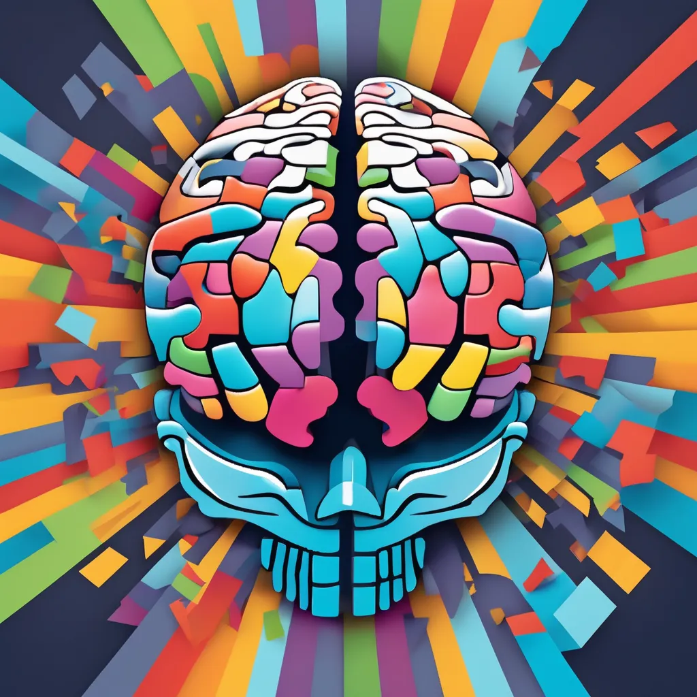
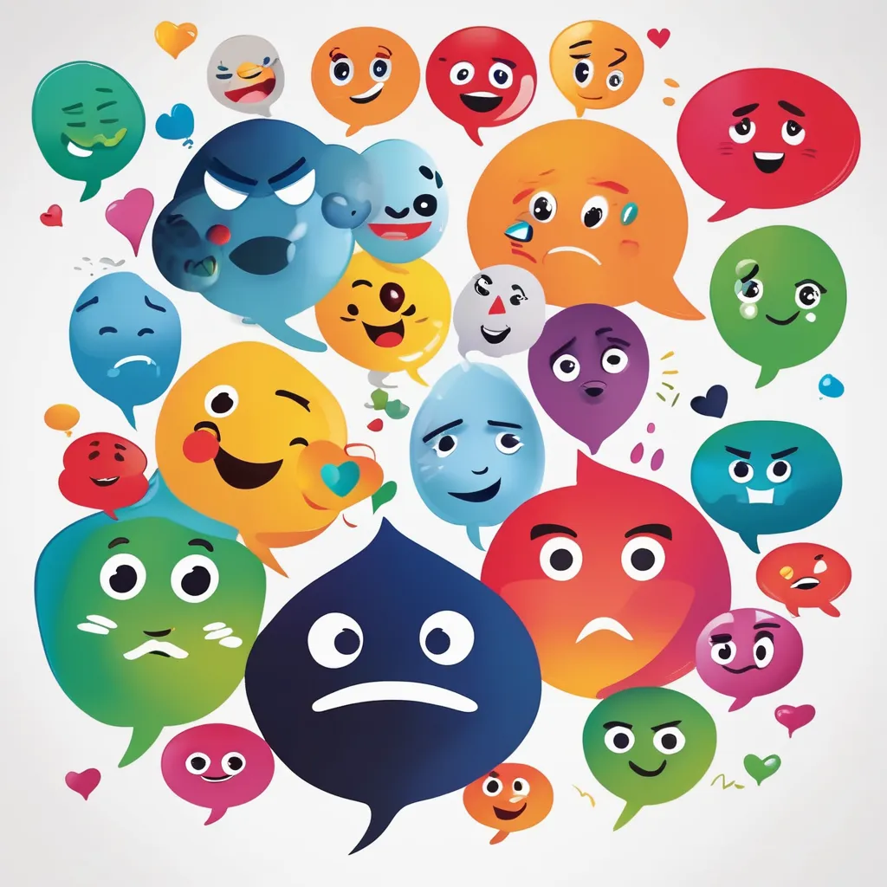
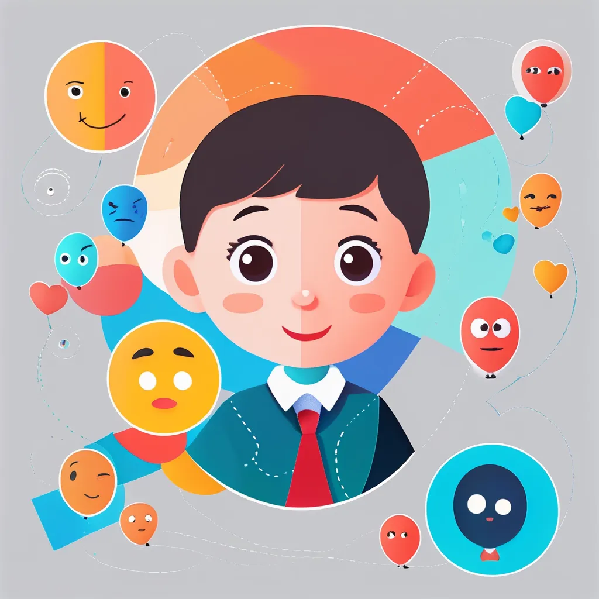
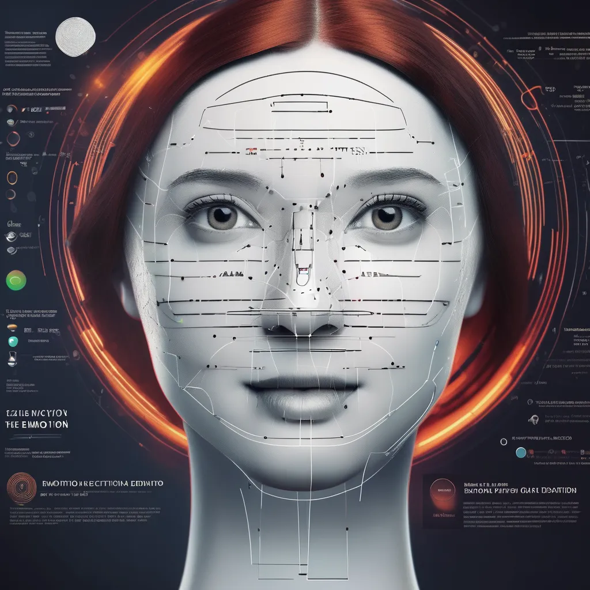

Assistive tools for Autism using Gemini


AAC tool for Nonverbal Autism using Gemini

Emotion detection from text, images, audio , Text to Speech and chatbot using Gemini API and Mesop

Chrome Extension for Text emotion detection using Gemini Pro API
Chrome Extension for Chatbot built using Vertex AI Agent Builder

Text Emotion Detection using Gemini Nano(Integration with Chrome ) and React
Android Application for Text Emotion detection using Gemini Flash

Using Firebase Genkit for detecting emotions in Text , Speech and Face
Images in the website are generated using pixlr